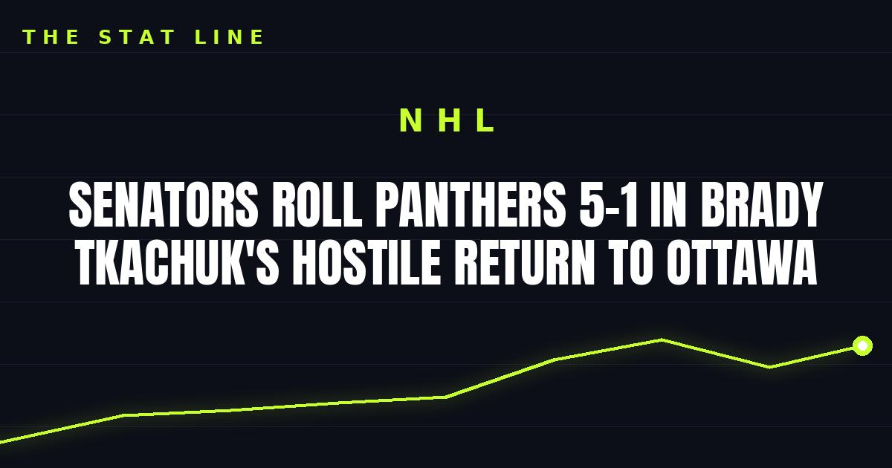

Senators Roll Panthers 5-1 in Brady Tkachuk's Hostile Return to Ottawa
Brady Tkachuk scored on Florida's first shot in his first game in Ottawa since the June 21 trade — then the Senators scored five straight to win 5-1, with Linus Ullmark exiting in the third with a lower-body strain.

Disclosure: this post contains affiliate links. I earn a commission on qualifying purchases.
Ottawa waited four months for this one, and it delivered everything the calendar promised: Brady Tkachuk scored nine seconds into a power play at 10:00 of the first — on Florida's first shot of the game — in his first appearance at Canadian Tire Centre since being traded to the Panthers on June 21. Then the Senators answered with five straight goals and rolled to a 5-1 win that snapped Florida's three-game winning streak.
Tkachuk took a feed from his brother Matthew down low on the right side and wired a wrist shot under Linus Ullmark's right arm — his 114th goal in this building counting his playoff tallies. "It was just nice to be back," he said after. "Of course, not the outcome that we wanted."
The crowd let it fly
The tribute video played. The boos swallowed the narration. Then the building let out four months of feelings:
• "We don't need you"
• "Traitor"
• "Little brother"
• "You can't read"
• "Timmy's better"
"However they feel," Panthers coach Paul Maurice had said pregame. "If you're unhappy, come unhappy... That's what hockey and pro sports is all about. Let it all fly."
They did. Tkachuk was booed from warmups on, and the sellout crowd treated every Ottawa check like a goal. Veteran Claude Giroux (20 years, 1,355 NHL games) was asked if he'd ever played a game with that much animosity toward a former teammate: "Not that I remember. It was a unique game, for sure."
The five straight
1st, 14:13: Tim Stützle (PP); One-timer from the right circle off a Jake Sanderson feed; tied it 1-1
2nd, 9:34: Claude Giroux; Wrist shot past a screened Akira Schmid between the circles; 2-1
2nd, 17:18: Shane Pinto; Powered past Niko Mikkola, deflected off his skate and trickled in; 3-1
3rd, 7:58: Warren Foegele (SH); Dylan Cozens set him up at the edge of the left circle, five-hole; 4-1
3rd, 14:57: Stephen Halliday; Drop pass from Stützle, over Schmid's glove from the right circle; 5-1
"It felt like a playoff game," Giroux said. Stützle called it "probably the most full 60 minutes we played all year." Coach Travis Green put it even simpler: "I don't remember ever rating a game where every player we liked. Tonight, everyone was good."
Fifteen Panthers penalties and 13 Senators penalties told the rest of the story — scrums all night, including one in the final minutes that sent trash, jerseys, and debris onto the ice.
The Ullmark scare
The one sour note for Ottawa: Linus Ullmark exited at 3:25 of the third period with a lower-body strain after making a kick save. He allowed one goal on 18 shots before being helped off; Samuel Ersson made one save in relief. Green said Ullmark — who leads the NHL in wins (seven) and save percentage (.945), and ranks second in goals-against average (1.33) — will be reassessed Thursday.
Bright spots amid the noise: Sanderson had two assists in his return to the lineup after missing eight games with a lower-body injury, and Stützle's 38th career power-play goal tied Jochen Hecht for third-most by a German player in NHL history.
For Florida, Akira Schmid made 25 saves, Tkachuk extended his five-game point streak (11 points, seven goals), and Matthew Tkachuk's nine-game point streak (three goals, 12 assists) survived the night. The Panthers (5-3-2) head to Pittsburgh on Thursday for the second half of a back-to-back. Ottawa (7-3-0) has won two of three.
Sources: NHL.com game recap · NHL.com feature
Watch
Source: "Brady Tkachuk: Scores Goal, But Florida Panthers Lose to Senators in Return to Ottawa" — FloridaHockeyNow. Tkachuk speaks to the media in Ottawa after the 5-1 loss: his power-play opener in his return, and watching the Senators answer with five straight.
Gear up: Sports category post → [Fanatics](https://fanatics.93n6tx.net/WOLjqe): via Fanatics